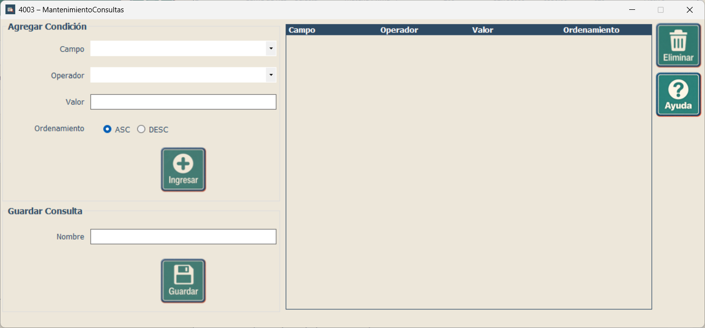
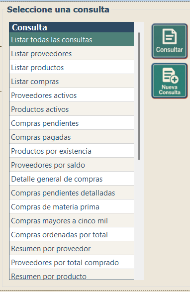

Creación, mantenimiento y selección de consultas guardadas
La ventana de Mantenimiento de Consultas permite crear y guardar consultas que podrán utilizarse nuevamente en el sistema.
Para configurar una consulta, seleccione el campo, operador y valor que correspondan. También puede establecer el tipo de ordenamiento que desea aplicar a los resultados.
Presione el botón Ingresar para agregar la condición a la consulta. Cuando haya terminado de configurar las condiciones, escriba un nombre para identificarla y presione Guardar.
Si desea retirar una condición previamente agregada, selecciónela y utilice la opción Eliminar.

Las consultas guardadas pueden utilizarse nuevamente sin necesidad de volver a configurar sus condiciones. Esta opción facilita el acceso a consultas que se utilizan con frecuencia.
Seleccione la consulta que desea utilizar y presione el botón Consultar para ejecutarla.
